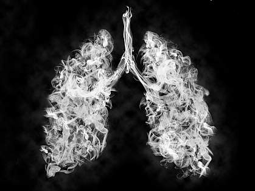

Projects Under Development
This page contains the projects which are currently under development by me.
Following is the list of projects on which i have been working on nowadays.
Random Numbers

This is the project in which i am try to make truly random numbers by using the inputs from
the environment in the form of video information, sound information and many more. currently the
idea is under development. By clicking on the button given below you can see the current developments
in my project that i have uploaded on github.
New Project Ideas
This page contains the New Project Ideas and discussion on the idea and its approach.
Following is the list of New Project Ideas.
- Sound to Image Conversion
- Non-Gaussian and Multiplicative Noise removal from Satellite Images using Deep Learning
Sound to Image Conversion

This project is based on the new approach and idea of pixel encodations from the sound. basically the techniques will help in converting 1D data to a 2D data.
The basic approach is explained here.
The image we will be making can be of n by n dimensions for example 128 by 128, and in addition to this, it will be including the 3 color channels i.e. RGB.
So in all, it will be a numpy array of n,n,3 dimensions...
In order to make this we need to obtain the 3 types of information from the sound sample, which can be done by using the following encoding technique ( #proposed_by_me ) -->
F --> Max. Frequency in the sound sample or the filtered sound sample i.e. noise removed sample.
A --> Max Amplitude in that filtered Sound Sample.
L --> Length of that sound Sample.
I chose thees three properties because converting the back of that image to the sound will be much easier if we have this information encoded into the channels itself.
Now, let us suppose we have a soundtrack of length L in the time domain and we want to make a 128 by a 128-dimensional image so we need to sample that sound in 128x128 = 16384 samples.
These segmented samples will be used to extract the 3 defined FAL values from them and once these are extracted then we will be placing this linear array information F, A, L into the
image by using a special mathematical continuous looping technique, which is much efficient than linear arrangement.
The link for this technique and utilization can be accessed by clicking on the button below below:
Also, this will be fun to see if we can recover the same sound from the generated image and if the image generated can make any sense or what sounds make what kind of image with this encoding.
It will also be interesting to see if one/i can also come out with different encoding techniques/methods/algorithms in future.
Non-Gaussian and Multiplicative Noise removal from Satellite Images using Deep Learning

This is a project and a research paper idea, and is under study for now, there is not any theory proposed yet but will be updated soon.
Projects in field of Medical
This page contains the Projects related to field of medical science or the projects that might be helpful for medical purposes.
Following is the list of Projects completed.
- Covid-19
- Lung Cancer
- Text to Braille
Covid-19

This project is related to the field of Medical Image Processing where the classification of Chest X-ray images into three classes which are Normal,
Pneumonia and COVID-19 is done. The concepts of Image Processing, Computer Vision and Algorithms, Deep Learning and Machine Learning is used in this
project. Also, the future developments will include the optimization of algorithm to also work under low light conditions (like when the light source
is only head light or street light), improving the time of prediction and practical deployment of the project. By clicking on the button given below
you can see the current developments in my project that i have uploaded on github.
Lung Cancer

This project was a part of a internship that i did under my college during lockdown. In this project i with my partner first researched on
lungs segmentation from the radiograpich images by using watershed algorithm and then once we were sucessfull in segmenting the lungs from the image, we
tried three different networks and trained them to classify the given data into cancer and non cancer images of lungs.
The github link of the project can be accessed by clicking on the link given below.
Text to Braille
The project is made for visually challenged people who know how to read the brails codes. The project was made using opencv and py tesseract for image processing
part in which the video input from the camera is first preprocessed to filter out the noise using open cv and then the image was given to the pytesseract pretrained
model which then detected the letters from the image. after that the detected letters/ words/ sentences/ paragraphs were saved as a word document. then these words are
serially transmitted to the arduino uno character by character which is then programed using C++ to move the servo motors according to the braille format of the characters.
This project was made by in keeping in mind the idea that there should be an ease of acces of reading material to the visually challenged people.
The github link of the project can be accessed by clicking on the link given below.
Wire-less Communication
This page contains consist of the projects that are related to wireless communication technology.
Following is the list of Projects related to wireless communication.
- CSI Estimation through Deep-learning
CSI Estimation through Deep-learning
This project is related to the 5G communication technology development. It is the research paper implementation
project in which i have trained a Deep Learning model to estimate the CSI (Channel State Information) for eMBB
(enhanced Mobile Broad Band) Channel by using the information from URLLC (Ultra Reliable Low Latency Communication)
Channel. This CSI is then used by the transmitter for making the beamforming weight vector for the transmitter antenna.
The github link of the project can be accessed by clicking on the link given below.
Innovative Projects
This page contains consist of the projects that are related to new technologies and innovative ideas.
Following is the list of Projects related to this field.
- Smart Road Assistant
- Library Entry-Exit Management System
Smart Road Assistant

This project is the practical implementation of Deep Learning model for object detection by using YOLO algorithm and
the use of open-cv tool for kalman filter which is used for object tracking and path prediction. also it uses some image
processing using open-cv for dull image enhancement which can be further cleared by using deeplearning models. This project
is related to crash predictions and night image enhancement for the drivers.
The github link of the project can be accessed by clicking on the link given below.
Library Entry-Exit Management System

This is the basic python code/script for keeping and managing the record of students that enters and exits the library along with their library books.
The github link of the project can be accessed by clicking on the link given below.
Work in Organization
In this page I have listed the github organizations i am working with and the projects i have contributed in those Organizations.
Following is the list of Organizations
ISTE NITH
Currently I am at a position of Joint Technical Secretary in this Society. There are various projects and initiatives undertaken by us in our
institution, the link to our website will be giving all of the information related to Society and it's work.
Minor Projects
In this page i have listed some of the minor projects that i have worked on.
Following is the list of the minor projects that i have completed.
- Computer-Aided Design (CAD)
- Face Recognition
- Digital Signal Processing
- MNIST Digit Recognizer (with enhanced test accuracy)
- Neural Style Transfer
- Python Code for color detection in autonomous bot
The github link for the minor projects repository can be accessed by clicking on the button given below.
Electronics Projects
This page consist of the projects that are related to the field of electronics.
Following is the list of Projects related to Electronics.
- Adiabatic Techniques for Power Efficient Circuits.
Adiabatic Techniques for Power Efficient Circuits
This project is a research paper implementation that explains the use of adiabatic techniques that can be used for the
efficient power consumption in digital electronic circuits, also we have explained some other power efficient ways in the
project. The project was simulated on LT Spice, Tanner, and Electric.
The github link of the project can be accessed by clicking on the link given below.